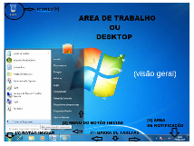
SISTEMA OPERACIONAL
- Software principal do computador ou celular
- Faz a ponte entre você, os aplicativos e o hardware
- Coordena o funcionamento do aparelho
Aplicativos
- Computadores concentram Windows, macOS e Linux
- Celulares e tablets atuam com Android e iOS
Qual a função?
- Gerencia processador, memória, arquivos e dispositivos
- Organiza a execução dos aplicativos
- Exibe a interface que usamos
CONHEÇA O WINDOWS
ÁREA DE TRABALHO
JANELAS
TRABALHE COM PROGRAMAS
- Software principal do computador ou celular
- Faz a ponte entre você, os aplicativos e o hardware
- Coordena o funcionamento do aparelho
- Menu Iniciar: aplicativos e configurações
- Barra de tarefas: programas abertos
- Ícones: acesso rápido
- Notificações: rede, som, relógio e calendário
- Abrir, minimizar, maximizar e fechar
- Usar duas ou mais janelas
- Alternar entre programas com Alt + Tab
- Prática: abra dois programas e alterne entre eles
EXPLORADOR
ORGANIZAÇÃO
ARQUIVOS E PASTAS
CUIDANDO DOS ARQUIVOS
- Encontre arquivos, pastas e unidades
- Conheça Documentos, Downloads e Imagens
- Arquivo é conteúdo; pasta ajuda a organizá-lo
- Abra o Explorador com Windows + E
- Criar e renomear pastas
- Copiar e mover arquivos
- Excluir e restaurar pela Lixeira
- Pesquisar um arquivo pelo nome
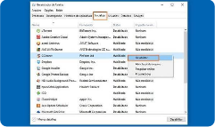
ATALHOS
DESEMPENHO
GANHE TEMPO
GERENCIADOR DE TAREFAS
- Ctrl + C / Ctrl + V: copiar e colar
- Ctrl + X / Ctrl + Z: recortar e desfazer
- Ctrl + S: salvar | Alt + Tab: alternar janelas
- Windows + Shift + S: captura de tela
- Veja aplicativos e processos em execução
- CPU: processamento das tarefas
- RAM: memória usada pelos programas em uso
- Observe disco e rede; encerre apenas tarefas conhecidas
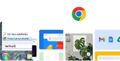
PESQUISA
WINDOWS E INTERNET
- Procure programas e arquivos no Windows
- Use palavras-chave claras na internet
- Conheça abas, favoritos, histórico e downloads
- Confira a fonte e identifique anúncios
ARMAZENAMENTO
ESPAÇO E DESEMPENHO
- HD e SSD guardam arquivos e programas
- RAM ajuda a manter programas em funcionamento
- Consulte o espaço livre e conheça a Lixeira
- Use armazenamento em nuvem e faça backups
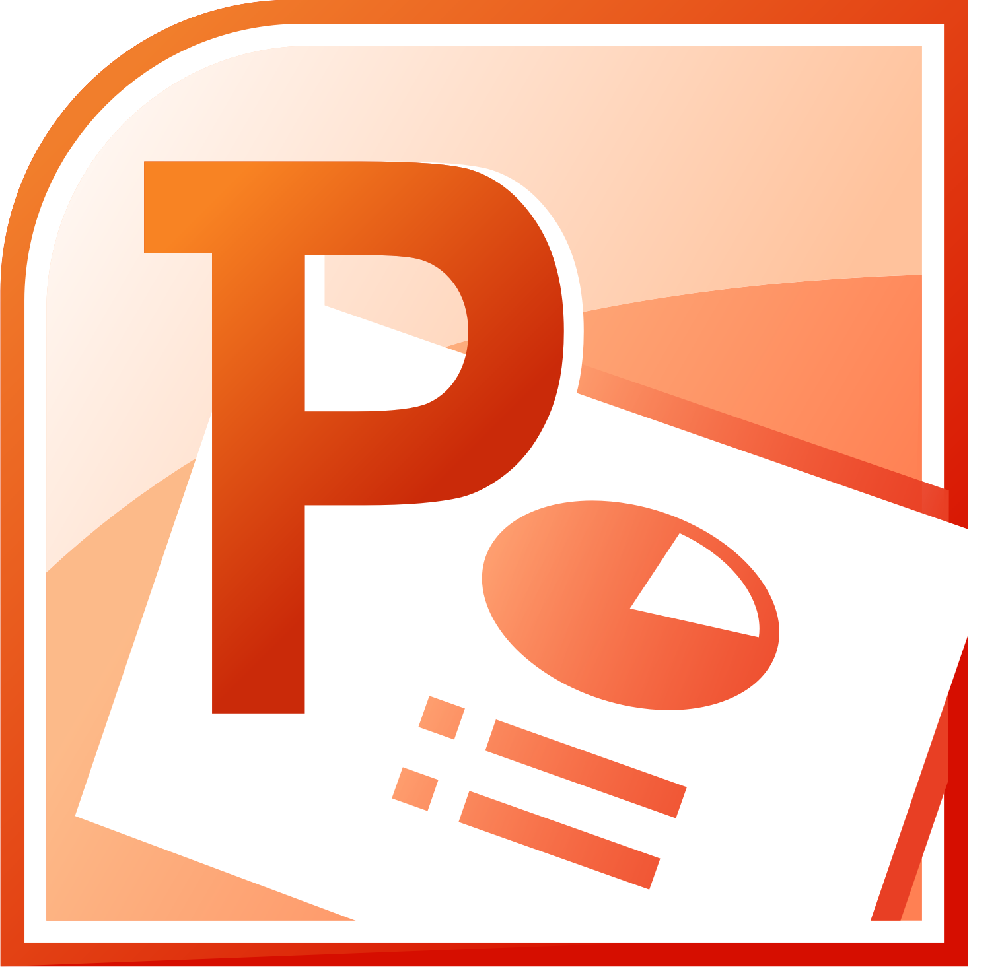
POWERPOINT — BÁSICO
Crie apresentações organizadas em slides.
Conhecendo a interface
- Faixa de opções: ferramentas de edição
- Painel lateral: slides e sequência
Montando os slides
- Crie, duplique, exclua e reorganize
- Escolha layouts para títulos e conteúdos
POWERPOINT — EDIÇÃO
Textos, imagens e formas comunicam ideias.
Organizando elementos
- Insira, redimensione e posicione
- Use alinhamento, grupos e camadas
Hora de apresentar
- Transições: passagem entre slides
- Animações: movimento dos elementos
- Use o modo apresentação para exibir
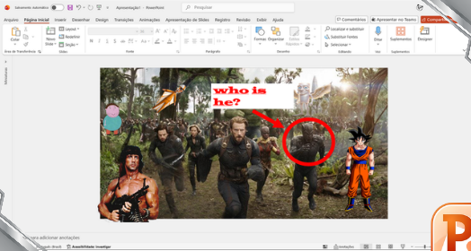
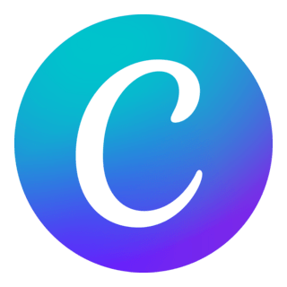
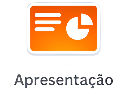
CANVA — INÍCIO
Criação visual com modelos e edição simples.
Começando um projeto
- Escolha o formato de apresentação
- Crie, duplique e reorganize páginas
Explorando o editor
- Menu lateral: textos, elementos e uploads
- Selecione um elemento para editá-lo
- Organize seus projetos em pastas
CANVA — TEMPLATES
Modelos prontos ajudam a começar.
Escolhendo um modelo
- Procure um estilo adequado ao tema
- Prefira layouts fáceis de ler
Adaptando o conteúdo
- Substitua textos, imagens e cores
- Combine páginas mantendo um padrão
- Evite misturar estilos diferentes
CANVA — TEXTOS
As letras indicam o que ler primeiro.
Criando hierarquia
- Títulos maiores e textos de apoio menores
- Destaque palavras com moderação
Facilitando a leitura
- Combine poucas fontes legíveis
- Ajuste tamanho, peso e espaçamento
- Mantenha o alinhamento dos textos
CANVA — CORES
Cores organizam e destacam informações.
Definindo uma paleta
- Escolha cores principais e secundárias
- Reserve uma cor para os destaques
Aplicando com clareza
- Garanta contraste entre texto e fundo
- Repita as cores ao longo dos slides
- Experimente os estilos de cores
CANVA — IMAGENS
Imagens complementam a mensagem.
Adicionando imagens
- Use a biblioteca ou envie seus arquivos
- Escolha imagens com boa qualidade
Ajustando o visual
- Recorte e use molduras sem deformar
- Ajuste transparência e posicionamento
- Explore imagens como fundo
CANVA — ELEMENTOS
Recursos gráficos ajudam a explicar ideias.
Encontrando recursos
- Pesquise por palavras-chave
- Explore formas, setas, ícones e ilustrações
Usando com intenção
- Setas indicam caminhos e relações
- Formas separam blocos de informação
- Combine estilos e evite excessos
CANVA — ORGANIZAÇÃO
Slides equilibrados mantêm um padrão visual.
Organizando o espaço
- Use guias, margens e alinhamento
- Ajuste espaçamentos, grupos e camadas
Criando identidade
- Repita cores, fontes e estilos de títulos
- Mantenha um estilo de imagens
- Deixe espaços vazios para facilitar a leitura
CANVA — INFORMAÇÕES
Transforme textos e dados em conteúdo visual.
Resumindo ideias
- Prefira palavras-chave e frases curtas
- Use cards, comparações e linhas do tempo
Apresentando dados
- Barras: comparação; linhas: evolução
- Pizza: partes de um total; tabelas: consulta
- Destaque números e informe a fonte
CANVA — RECURSOS
Explore movimento e ferramentas extras.
Animações e mídias
- Anime textos e elementos com moderação
- Ajuste transições e duração dos efeitos
- Inclua vídeos e áudios relacionados ao tema
Outras possibilidades
- Links, QR Codes e mockups
- Remoção de fundo e IA, conforme a conta
- Revise resultados gerados automaticamente
CANVA — EXPORTAÇÃO
Prepare o material para apresentar e compartilhar.
Antes de apresentar
- Revise textos, alinhamentos e sequência
- Use o modo apresentar e as notas
Compartilhando
- Defina acesso para visualizar ou editar
- Exporte em PDF, PowerPoint, imagem ou vídeo
- Confira o arquivo após baixar
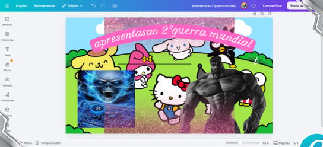
WORD E GOOGLE DOCS
CRIAR DOCUMENTOS
- Qual ferramenta você costuma usar?
- Trabalhos
- Relatórios
- Currículos
- Pesquisas
FORMATAÇÃO BÁSICA
DESTAQUE COM INTENÇÃO
- Fonte: tipo, tamanho e cor
- Negrito, itálico e sublinhado
- Alinhamento: esquerda ou justificado
TÍTULOS
ORGANIZAÇÃO
Título do trabalho
1. Introdução • 2. Desenvolvimento
2.1 Aplicações • 3. Conclusão
Use estilos para padronizar e gerar sumário.
INSERIR
COMPLEMENTE O TEXTO
- Imagens e tabelas organizam informações.
- Links conectam a páginas da internet.
- Cabeçalho e rodapé: nome, turma e página.
- Marcadores: sem ordem. Numeração: sequência.
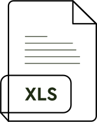
COLABORAÇÃO
REVISAR E COMPARTILHAR
Leitor: visualiza
Comentador: comenta
Editor: modifica
Docs: salva automaticamente e facilita edição em grupo.
Word: funciona offline e oferece recursos avançados.
Revise português, títulos, fontes, links e espaçamento.
Criar → escrever → organizar → revisar → entregar.
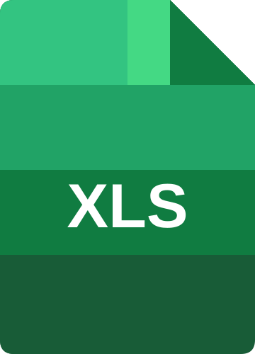
Excel
primeiras fóRmulas
- SOMA
- MÉDIA
- SE
- SOMASE
- CONT.VALORES
- CONT.NÚM
- MÁXIMO e MÍNIMO
- PROCX
- PROCV
THe OUTLOOK
emails e como usar?
- Como enviar e-mails
- Como ler e-mails
- O que é CC e CCO?
- Spam, Lixeira e SMTP
Phishing
Pessoas más fazendo maldade
- O que é o Phishing?
- Porque fazem e como fazem?
- Como se precaver?
- Análise crítica é necessária!
FINAL BOSS
PRÁTICA FINAL DA MALDADE
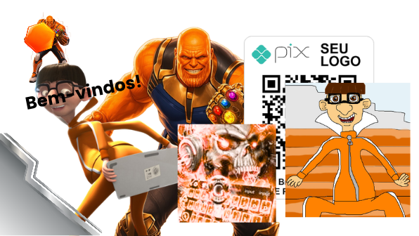
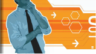
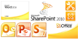
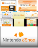
principais elementos da estética DORFic (nosso curso vai se basear nisso)
PESQUISA NO GOOGLE
Encontre informações e imagens para seus slides.
Melhorando a busca
- Use palavras-chave específicas
- Use aspas para buscar expressões exatas
- Explore Imagens, Vídeos e filtros disponíveis
Escolhendo as fontes
- Confira origem, data e confiabilidade
- Verifique a permissão de uso das imagens
- Registre as fontes utilizadas